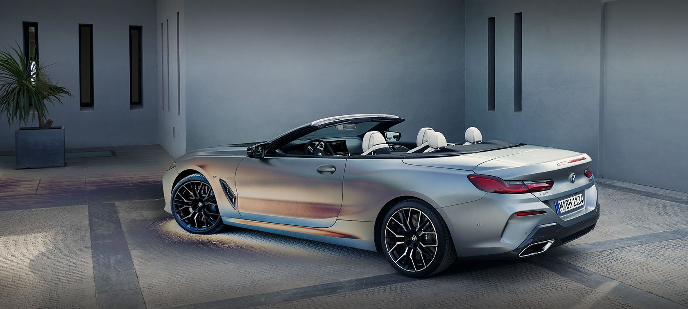
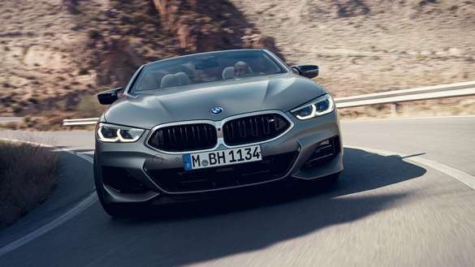
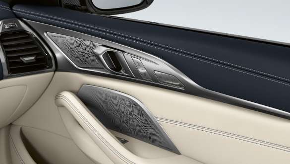
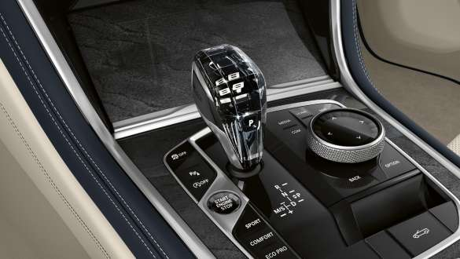
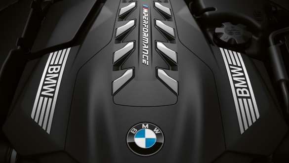
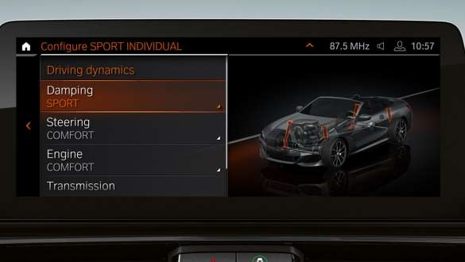
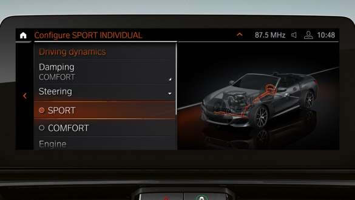

|  | ||||
| Motor ve Yakıt Tipi | Güç | 0-100KM | Ortalama yakıt tüketimi (litre/100 km): | |
| Benzin | 333 bg | h:5.2sn | 9.2–8.8 | |
|  | M SPORT TASARIMI. |
|
BMW 840i xDrive Cabrio, M Sport tasarımıyla birlikte sunuluyor. Ayrıcalıklı özelliklerle otomobilinize daha atletik bir görünüm kazandırın:
|

| BMW 8 SERİSİ CABRIO'NUN ÖNE ÇIKAN İÇ TASARIM ÖZELLİKLERİ. | ||
| BMW 8 Serisi Cabrio'nun şık iç tasarımı, üstün donanımı ve ayrıcalıklı özellikleri sayesinde benzersiz lüksü, konforu ve sportif karakteri birleştiren bir sembol haline geliyor. | ||
 |
 |  |
| M Sport tasarım ön koltuklar. | Bowers & Wilkins Diamond surround ses sistemi. | "CraftedClarity" cam uygulaması. |
| M Sport tasarım ön koltuklar kapsamlı ayarlama olanakları, muhteşem bir oturma konforu ve üst düzey güvenlik sunuyor. | Bowers & Wilkins Diamond surround ses sistemi, 1.400 watt çıkışıyla otomobildeki tüm koltuklar için stüdyo kalitesinde olağanüstü bir ses deneyimi sunuyor. | "CraftedClarity" cam uygulaması, iç tasarımı görsel ve dokunsal açıdan zenginleştiren el yapımı cam detaylar sunuyor. Bu kapsamda vites seçim düğmesi, BMW Controller ve Start/Stop düğmesinin detayları zarif cam malzemeden üretiliyor. |
| BMW 8 SERİSİ CABRIO'NUN HAREKETLİ AKSAM VE YÜRÜYEN AKSAM TEKNOLOJİLERİ. | ||
| BMW 8 Serisi Cabrio ile üst düzey sürüş dinamiklerinin keyfini yaşayın. Kusursuz şekilde ayarlanan hareketli aksam ve yürüyen aksam teknolojileri ile sportif sürüş deneyiminin tadını her yolcukta çıkarın. | ||
|  |  |  |
| Yüksek verimliliğe sahip BMW TwinPower Turbo motorlar. | Adaptif M süspansiyon. | İntegral Aktif Direksiyon. |
| BMW 8 Serisi Cabrio, opsiyon olarak oldukça verimli BMW TwinPower Turbo 6 silindirli benzinli veya dizel motorla donatılabiliyor. | Adaptif M süspansiyon, amortisör karakterinin herhangi bir sürüş koşuluna uyarlanabilmesini sağlayarak konforu ve sürüş dinamiklerini zirveye taşıyor. | İntegral Aktif Direksiyon, düşük hızlarda manevra kabiliyetini ve çevikliği desteklerken yüksek hızlarda da dengeyi artırıyor. |